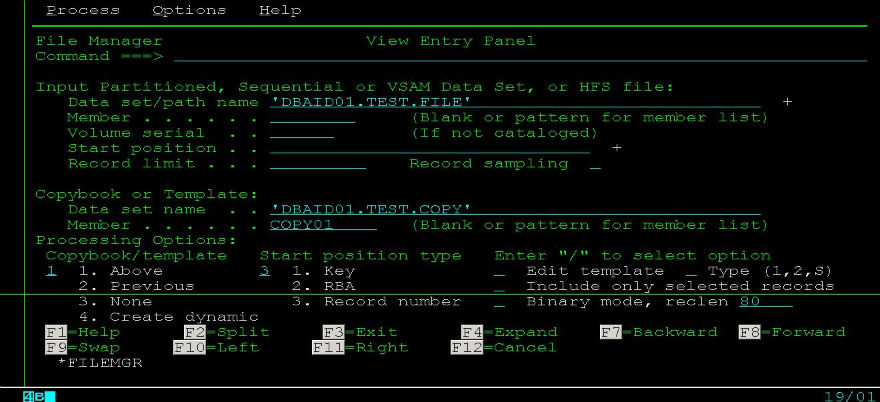

IBM File Manager for z/os
2011-08-28
IBM的File Manger 在大机平台上是非常强大的文件查看/编辑器，是一个强大的ISPF应用程序。这里先贴上一张IBM2011年最新的关于File Manger的结构图，我认为这张图很好地诠释了File Manager 的强大之处：

[图片来源于IBM官方网站，仅供学习交流之用]
参照上图，我这里要讲的是当中的第二块内容——File Manager for Z/OS，关于其它部分如File Manager for DB2,File Manager for IMS和File Manager for CICS，以后再说。(其实更主要是因为平常工作做我用for z/os用的多，db2和cics的用得少，不敢在这瞎说。)。基本的操作原理就不说了，我就说说我在平常工作当中的几个有用的小技巧好了。 以查看/编辑QSAM (sequential)的dataset为例，选项1是查看(View),选项2是编辑(Edit),我们View进去看到如下图：

这里DBAID01.TEST.FILE是你的ID(DBAID01)开头的一个你要查看的File，不过它只是一个纯的无格式的数据文件，你所做的就是要给它指定一个模板(COPYBOOK)，COPYBOOK规定它该按照什么样的方式显示。DBAID01.TEST.COPY(COPY01)就是DBAID01.TEST.FILE的COPYBOOK,它当中规定了DBAID01.TEST.FILE该如何显示。
Category: Mainframe Tagged: z/OS File Manager